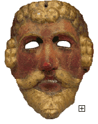

|

|
|

Maya Mask of a Spanish Conquistador,
19th century, wood, pigment, The Paul C. Johnson, Jr. Fund, The Minneapolis Institute of Arts, 99.3.2
|
Spanish Exploration
During the first half of the 16th century, several Spanish expeditions explored
regions of the continent to the north of present-day Mexico. The earliest
documented encounter with Native people occurred in 1513 when Ponce de Leon,
who colonized Puerto Rico, sailed north to the peninsula that is now Florida.
As a preemptive strike against the French who were exploring to the north, the
Spanish made several attempts at colonization. They established the first settlement
of St. Augustine in what is now Florida in 1565. In what is today New Mexico, a
large group of settlers drove out the
Pueblo
people in 1598 to establish a
Spanish colony. By 1610, the Spanish established their capital in Santa Fe, which
they maintained until 1680 when the pueblo
people revolted and in turn, drove the
Spanish out. Fourteen years later the Spanish regained control.
French Exploration
At the same time that the Spanish were exploring the southern regions of the continent,
the French established themselves in the Northeast, capitalizing on the abundant
variety of fish, and establishing a lucrative fur trade with Native people of the
Woodlands area. The French reached the Great Lakes by 1623. During the early 1700s,
they pushed south from their settlements in Canada to the interior of the continent.
Even though this land had been home to Native people for thousands of years, the
French were able to establish dominion in the area from Minnesota to the Gulf of
Mexico, which they named Louisiana after their king, Louis XIV.
The English and the Dutch
Along the Atlantic seaboard, the English and the Dutch joined in competition for
the land of the New World. Before the end of the 16th century, the English had
attempted to establish colonies on Roanoke Island off the coast of North Carolina.
The first permanent English settlement was to the north at Jamestown, Virginia in
1607. Two years later, the Dutch founded the colony of New Amsterdam (today's New
York). It was here that the infamous trade occurred in which the Dutch acquired
Manhattan Island for goods that were valued at $24 at that time. By the time the
pilgrims settled at Plymouth Colony (Massachusetts) in 1620, the Native people held
deep resentments against white settlers. Despite these hard feelings, Samoset, a
Pemaquid chief, greeted the colonists in English and gave assistance to the newcomers.
In 1625, the first deed transferring land from the American Indians to the Europeans
was recorded. Samoset did not consider deeds important, unable to foresee the
consequences of the European idea of exclusive land rights. Samoset, like other Native
people, believed that the land belonged to everyone.
The Impact of Europeans
The three centuries that followed the early exploration and settlement of North America
by Europeans witnessed the transformation of American Indians from free people who
populated the entire continent to a vastly reduced numbers confined to reservations.
In the beginning European colonists often reported encounters with Native people who
were friendly and helpful to them. But Native people stood in the way of what colonists
wanted. The motivation of European-Americans, which was the acquisition of land, was
always in direct opposition to the desire of the Native people to live lightly on the
earth in accordance with their own traditions. In many instances Native people were
simply crowded out of their lands. When it was necessary to forcibly remove them, they
were forcibly removed. Some Native people were used as unpaid laborers while others
were kidnapped and sold into the slave trade. European diseases, for which Native
people had no immunity, wiped out entire populations in many areas. By the middle of the
19th century, the Native population was reduced by one-half to two-thirds its size two
hundred years earlier.
More about Native American History and Culture
|